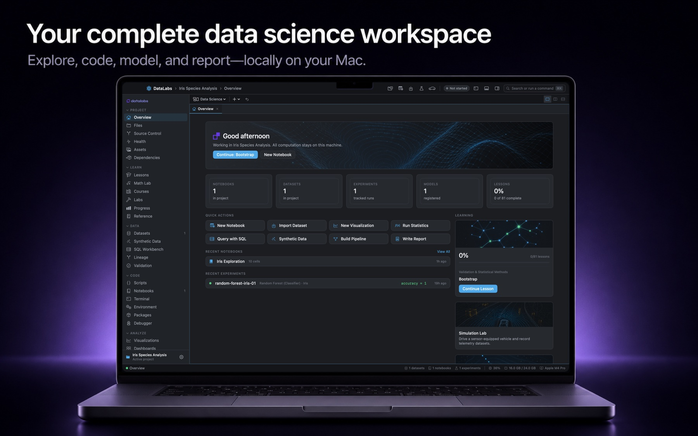

DATA
Prepare and query
Import CSV, TSV, JSON, JSONL, and Parquet data. Inspect quality, create durable cleaned versions, and query through SQL workspaces.
DataLabs is a local-first macOS laboratory for learning, data analysis, scientific computing, machine learning, simulation, and publishing. Bring an entire analytical workflow into one native project workspace—without creating an account.

Import, inspect, analyze, model, explain, and publish while keeping the project artifacts behind every result organized together.
Import CSV, TSV, JSON, JSONL, and Parquet data. Inspect quality, create durable cleaned versions, and query through SQL workspaces.
Write reusable scripts or explanatory notebooks, manage environments, inspect output, and keep code beside the project it supports.
Explore distributions, relationships, and uncertainty with guided analyses, detailed visualizations, dashboards, and diagnostics.
Configure experiments, compare runs, build visual pipelines, register models, and preserve the preprocessing context needed for inference.
Work through graphing, linear algebra, probability, numerical methods, signal tools, and interactive simulation in dedicated studios.
Compose technical documents, manage citations, build reports, and connect published explanations to the exact artifacts behind them.
DataLabs stores projects and application state on your Mac. It has no account system, developer-operated analytics endpoint, advertising SDK, or automatic project upload.
Review the complete privacy policy →The public support center includes direct developer contact, useful troubleshooting steps, and guidance for sharing diagnostics without exposing project data.